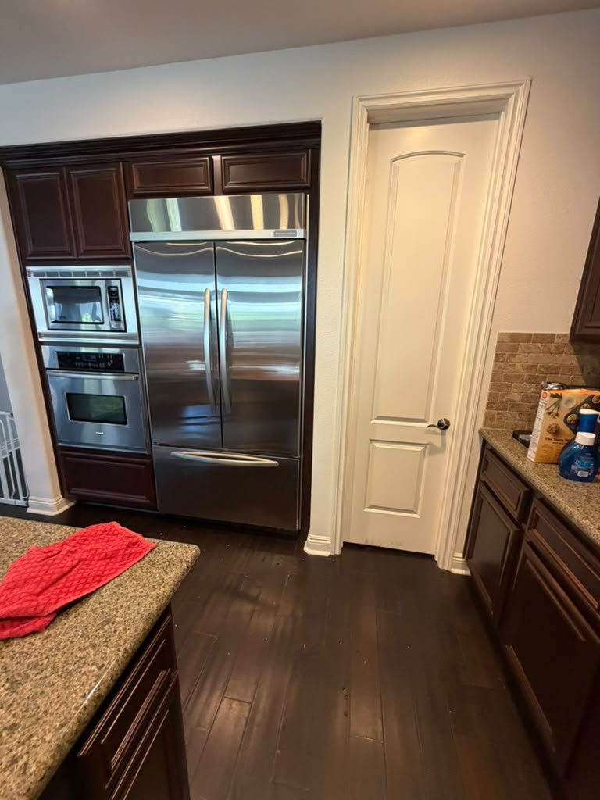

KitchenAid Dishwasher, Oven, Range & Refrigerator Repair in Orange County
Dishwashers that won't drain or flash the clean light, ovens throwing F-codes, cooktops that won't ignite, and built-in fridges that stop cooling. We know KitchenAid, Whirlpool's premium kitchen line. Same-day service available.
5.0 · 156 Google reviewsMon–Sat, 8am–7pm.

What to expect
- Flat $99 diagnostic feeApplied toward the repair if you approve the work.
- Written quote firstItemized, before any work starts.
- 90-day parts, 30-day laborWarranty on every repair.
- Same-day serviceCall or request online.
Family-owned since 2017 · Licensed, bonded & insured
Recent KitchenAid Repairs
Ten recent KitchenAid jobs. In Palm Springs, outside Orange County, a refrigerator had its condenser fan motor replaced and another had its control board replaced. A single wall oven in San Clemente would not hold temperature and threw an F-code, and an Aliso Viejo French-door refrigerator was serviced with a new temperature sensor. A built-in double wall oven in Irvine was baking off its setpoint until we replaced the oven temperature sensor, and a second, white double wall oven in Mission Viejo needed the same sensor replaced. In Santa Ana, a dishwasher had its control board replaced. In Brea, we repaired a water leak on a built-in refrigerator. This October, back in San Clemente, a double wall oven had its control board replaced and a French-door refrigerator had its door gasket replaced.


San Clemente, CA
KitchenAid Wall Oven Control Board Replacement (F-Code)

Aliso Viejo, CA
KitchenAid Refrigerator Temperature Sensor Replacement

Irvine, CA
KitchenAid Double Wall Oven Temperature Sensor Replacement

Mission Viejo, CA
KitchenAid White Double Wall Oven Sensor Replacement

Show all 10 KitchenAid repairs


San Clemente, CA
KitchenAid Refrigerator Door Gasket Replacement
Not sure if it's a KitchenAid or a Whirlpool? See our Whirlpool appliance repair service, or our Orange County dishwasher repair service.
What Our Customers Say
From our 156 verified 5-star Google reviews
AG arrived on time and fixed the oven. Great work!
AG fixed our Whirlpool refrigerator. Thank you!
AJ was professional, fast, and honest!!
Called for dishwasher repair and AG was very responsive, helped me save money ordering a part and then came back quickly to complete the job. All works well now. Would definitely recommend. Thank you!
From Call to Fixed: How a KitchenAid Repair Works
Here is exactly what happens from your first call to a fully working KitchenAid appliance.
Request a RepairCall or Request Online
Reach us at (949) 629-5365 or submit the contact form. Share the model number and the symptom or error code, and we schedule you the same day when possible.On-Site Diagnosis
A technician arrives in a 2-hour window and tests the pump, board, element, sensor, or igniter to find the exact fault, rather than guessing at parts.Upfront Quote
You get a clear, itemized quote before we start. The $99 diagnostic fee is credited toward the repair if you proceed. No surprise charges at the end.Repair & Warranty
Common KitchenAid pumps, boards, and elements ride in the van, so most repairs finish the same day. Every repair carries a 90-day parts and 30-day labor warranty: if the same problem returns within 30 days, we come back at no charge.
Pricing & Discounts
- $99 diagnostic fee: applied toward your repair when you approve the work. If you decide not to proceed, the $99 covers the visit.
- Multi-unit visits: first unit $99, each additional unit on the same visit $49.
- 20% off labor for repeat customers and seniors 60+ (cannot combine with other offers).
Estimates vary by brand, part availability, and diagnosis. Final quote is provided before repair. See full pricing guide
Diagnostic visit$99
- Applied toward the repair when you approve the work
- Itemized written quote before any work starts
- You decide whether to proceed
Dishwashers, Ovens, Cooktops, and Refrigerators: Every KitchenAid We Repair
KitchenAid is Whirlpool's premium kitchen brand, and its dishwashers and cooking appliances anchor a lot of Orange County kitchens. We service the full lineup, and we know the parts and control boards specific to each.
- Dishwashers
- KitchenAid's flagship. Not draining, not cleaning, standing water, clean-light blink codes, and door-latch or control-board faults are the calls we handle most, and a clogged filter or drain pump is the frequent cause.
- Wall Ovens & Ranges
- Single and double wall ovens plus gas, electric, and dual-fuel ranges. F-codes, a dead bake element, a weak igniter, or a drifting temperature sensor are the faults we meter and repair.
- Cooktops (Gas, Electric, Induction)
- A burner that clicks but won't light, an induction zone that won't heat, or a dead element usually means a failed igniter, spark module, or element. We meter each to find the fault.
- Built-In & French-Door Refrigerators
- Paneled built-ins and French-door units common in OC custom kitchens. We handle cooling loss, defrost faults, evaporator fans, control boards, and the ice maker.
- Microwaves & Advantium
- Built-in and over-the-range KitchenAid microwaves, including Advantium speed ovens, that stop heating or throw a door or control fault. We test the door switches, board, and high-voltage parts.
- Garbage Disposals
- KitchenAid disposals that hum, jam, or leak under the sink. We free the jam, repair the wiring or seal, or replace the unit the same day when it is beyond repair.
Blink Codes, Control Boards, and KitchenAid's Known Weak Points
KitchenAid appliances fail in specific, recognizable ways. These are the repairs our technicians handle most often on Orange County homes.
- Dishwasher Won't Drain
- Standing water at the bottom usually traces to a clogged filter, a jammed drain pump, or a blocked drain hose or air gap. We clear the blockage and confirm the pump and check valve before returning the unit to service.
- Dishwasher Won't Clean
- Gritty or wet dishes point to the wash pump, the spray arms, the chopper, or the diverter that routes water between racks. We check each so the dishwasher actually cleans, not just runs.
- Dishwasher Clean-Light Blinking
- A flashing clean light is a stored fault, and the blink count maps to a specific error, most often a heating-circuit or thermistor problem or a control-board fault. We read the code and confirm it with a meter before repairing.
- Oven F-Code or Won't Heat
- An F2 or F3 code is the electronic control reporting a failed board or a shorted temperature sensor. A cold oven often means a dead bake element or a weak igniter. We meter the element, sensor, and board to find the real cause.
- Cooktop Won't Ignite or Heat
- A gas burner that clicks without lighting, or an induction zone that stays cold, usually means a failed igniter, spark module, or element. We test the ignition and element to pin down which part failed.
- Refrigerator Not Cooling
- A warm KitchenAid fridge points to a failed evaporator fan, a stuck defrost system, a control board, or a sealed-system fault. On built-ins we diagnose carefully because the repair is worth doing on such an expensive unit.
- Ice Maker Not Working
- A KitchenAid ice maker that stops filling is often the water inlet valve, the ice-maker assembly, or a frozen fill tube, not the whole unit. We test the valve and assembly so you do not pay to replace a part that still works.
- Disposal Humming or Leaking
- A KitchenAid disposal that hums without spinning is usually jammed, while a leak is a worn seal or a cracked body. We free the jam and repair the seal, or replace the unit the same day when it is beyond repair.
KitchenAid: Whirlpool's Premium Kitchen Line
KitchenAid has a premium reputation, and it earns it, but it is worth knowing where the brand sits. KitchenAid is owned and built by Whirlpool Corporation, the same company behind Whirlpool, Maytag, and Amana. KitchenAid is the premium kitchen line of that family: the same underlying platforms and many of the same parts, dressed in better finishes, quieter dishwasher motors, and stronger cooking performance. So a KitchenAid dishwasher shares much of its mechanism with a Whirlpool one, and a KitchenAid oven uses the same family of electronic controls.
That connection is good news when something breaks. A technician who genuinely knows Whirlpool already knows most of KitchenAid, and the drain pump, control board, or bake element that fixes your KitchenAid is often the exact part that fixes its Whirlpool cousin. We carry those common parts on the van precisely because they cross so many models, which usually means a faster, one-visit repair on a premium machine that would otherwise be slow and expensive to source parts for.
It also changes the repair-or-replace math in your favor. KitchenAid units, especially built-in dishwashers, wall ovens, and refrigerators, are expensive to replace, while most common faults, like a drain pump, a door latch, or a bake element, are a few-hundred-dollar repair with widely available Whirlpool-family parts. A dishwasher control board runs higher, so on an older unit we talk through repair versus replacement with you before any work. If you are not sure exactly which KitchenAid model you own, read us the number off the door frame or the tub when you call, and we will bring the right parts the first time.
KitchenAid Repair Costs: What to Expect in Orange County
KitchenAid units are premium and expensive to replace, so for the common faults repair is usually the better financial choice. These are typical Orange County ranges, not quotes.
| Repair Type | Typical Range |
|---|---|
| Service call / diagnostic: Orange County market average (often credited toward repair) | $75 – $100 |
| Dishwasher drain pump | $180 – $380 |
| Dishwasher control board replacement | $400 – $550 |
| Dishwasher door latch / diverter / wash motor | $180 – $340 |
| Oven control board / bake element | $200 – $430 |
| Cooktop igniter / element / spark module | $180 – $380 |
| Refrigerator control board / ice maker | $200 – $430 |
| Refrigerator sealed system (built-in) | $400 – $800 |
| Garbage disposal repair / replacement | $150 – $350 |
Estimates vary by brand, part availability, and diagnosis. Final quote is provided before repair.
Our company diagnostic fee is a flat $99 in Orange County, credited toward the repair if you proceed. See our full appliance repair cost guide for broader Orange County pricing context. For a dishwasher control board, see our KitchenAid dishwasher control board replacement guide.
KitchenAid repair across Orange County
Universal Appliances Repair Group Inc. provides KitchenAid appliance repair across Orange County, California, including dishwashers, wall ovens, gas, electric and dual-fuel ranges, cooktops, built-in and French-door refrigerators, and garbage disposals. KitchenAid is Whirlpool's premium brand, so we service it on the same well-stocked parts. Common repairs include dishwasher drain faults and clean-light blink codes, oven F-codes and control boards, cooktop igniters, and refrigerator ice makers.
We serve Irvine, Newport Beach, Mission Viejo, Anaheim, Santa Ana, and surrounding cities, with same-day service available. Call (949) 629-5365 or book online to schedule a KitchenAid repair visit.
What Orange County KitchenAid Owners Ask Us
The most common questions from KitchenAid owners across Irvine, Newport Beach, Mission Viejo, Anaheim, and surrounding Orange County cities.
Still have a question? Call (949) 629-5365.
Yes. KitchenAid dishwashers are the appliance we service most for this brand, and they are the flagship of the KitchenAid kitchen. We handle units that won't drain, won't clean, leave standing water, or flash the clean-light blink codes, plus door-latch and control-board faults. Because KitchenAid is built by Whirlpool on shared platforms, we already know these machines and carry the common drain pumps, diverters, and control boards on the van. Call (949) 629-5365 for same-day availability in Irvine, Newport Beach, Mission Viejo, Anaheim, and surrounding cities.
Standing water at the bottom of a KitchenAid dishwasher usually traces to a clogged filter, a jammed drain pump, or a blocked drain hose or air gap. Dishes that come out gritty or wet point instead to the wash pump, the spray arms, the chopper, or the diverter that routes water between the upper and lower racks. We clear the blockage, confirm the drain and wash pumps, and check the diverter and spray arms before returning the unit to service, so it both drains and cleans properly again.
A flashing clean light is how many KitchenAid dishwashers report a stored fault, and the number of blinks maps to a specific error. It most often flags a heating-circuit problem (the water is not reaching temperature), a stuck or failed thermistor, or a control-board fault. Sometimes a control reset clears a one-time glitch, but a repeating blink code means a real failed part. We read the blink code, confirm it with a meter on the heater and sensor, and repair the actual fault rather than guessing.
On KitchenAid ovens and ranges, an F-code (such as F2 or F3) is the electronic control reporting a fault, usually a failed control board or a shorted temperature sensor. An oven that simply will not heat has a failed bake element on electric models or a weak igniter on gas and dual-fuel models. KitchenAid's premium ovens use the same electronic controls as their Whirlpool cousins, so we know these boards well. We meter the element, sensor, and board to find the real cause and repair it, usually the same day.
Yes. We service KitchenAid built-in, French-door, and side-by-side refrigerators, including the paneled built-in units common in Orange County custom kitchens. Common repairs are cooling loss, defrost faults, evaporator-fan problems, control boards, and the ice maker. A built-in is expensive to replace, so repair almost always makes financial sense, and we diagnose the sealed system and controls precisely before quoting. Give us the model number when you call so we bring the right parts for your specific unit.
KitchenAid is Whirlpool's premium kitchen brand. Whirlpool Corporation owns and builds KitchenAid alongside Whirlpool, Maytag, and Amana, on shared platforms but with upgraded finishes, features, and cooking performance. A KitchenAid dishwasher shares much of its guts with a Whirlpool one, and a KitchenAid oven uses the same family of electronic controls. That means our technicians already know these machines and often carry parts that fit across the family, which usually makes for a faster, one-visit repair. Tell us the model number and we will bring the right parts.
In most cases, yes, and often more so than a budget brand. KitchenAid units are premium and expensive to replace, especially built-in dishwashers, wall ovens, and refrigerators, while most common faults (a drain pump, a door latch, a bake element, or an ice-maker valve) are a few-hundred-dollar repair, and parts are widely available because they are shared with Whirlpool. A dishwasher control board costs more, so on an older unit we weigh that repair against its age and condition with you. Unless the sealed system has failed on an older built-in fridge, repair usually makes sense, and we give you a written quote before any work so you can decide with real numbers.
Our company diagnostic fee is $99 in Orange County, credited toward the repair if you proceed. Typical KitchenAid repairs run $180 to $380 for a dishwasher drain pump, $400 to $550 for a dishwasher control board, $200 to $430 for an oven control board or bake element, $180 to $380 for a cooktop igniter or element, and $200 to $430 for a refrigerator control board or ice maker. A built-in refrigerator sealed-system repair runs more. Because KitchenAid units are premium and costly to replace, repair is usually worth it. Estimates vary by model and part availability; we quote before starting.
We serve all of Orange County including Irvine, Newport Beach, Mission Viejo, Anaheim, Santa Ana, Huntington Beach, Laguna Niguel, Fullerton, Garden Grove, Lake Forest, Costa Mesa, Orange, and surrounding cities. KitchenAid is a popular premium kitchen brand in Orange County homes, so we service it across every neighborhood daily. Call (949) 629-5365 to confirm same-day availability in your area.
One KitchenAid Kitchen, Every Appliance Covered
A KitchenAid dishwasher usually shares the kitchen with a KitchenAid oven, cooktop, and refrigerator. One call handles your whole lineup, with the Whirlpool-family parts to match.
- Dishwasher RepairNot draining, not cleaning, standing water, clean-light blink codes, and control-board faults.
- Oven & Stove RepairWall ovens and ranges: F-codes, dead bake elements, weak igniters, and temperature-sensor drift.
- Refrigerator RepairBuilt-in and French-door units: cooling loss, defrost faults, control boards, and ice makers.
- Garbage Disposal RepairHumming, jammed, or leaking KitchenAid disposals under the sink, repaired or replaced the same day.
- Whirlpool RepairKitchenAid's parent brand on shared platforms: the same pumps, boards, and elements we already stock.
- Freezer RepairBuilt-in and standalone freezers that won't hold temperature, over-frost, or run warm.
- Repair Cost GuideTypical Orange County price ranges by appliance and repair, so you know what to expect before you call.
- All ServicesEvery appliance we repair across Orange County, from refrigerators to wine coolers.
Need KitchenAid Repair in Orange County?
Same-day service available. Call now or book online; a technician will confirm your appointment within the hour.
Call (949) 629-5365
Request a Repair
Mon–Sat, 8am–7pm